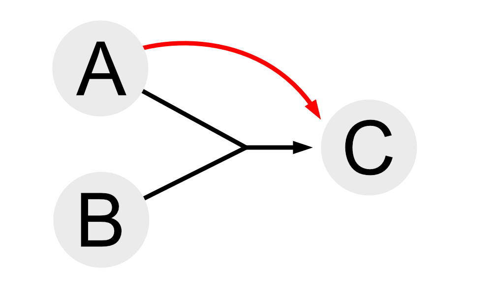
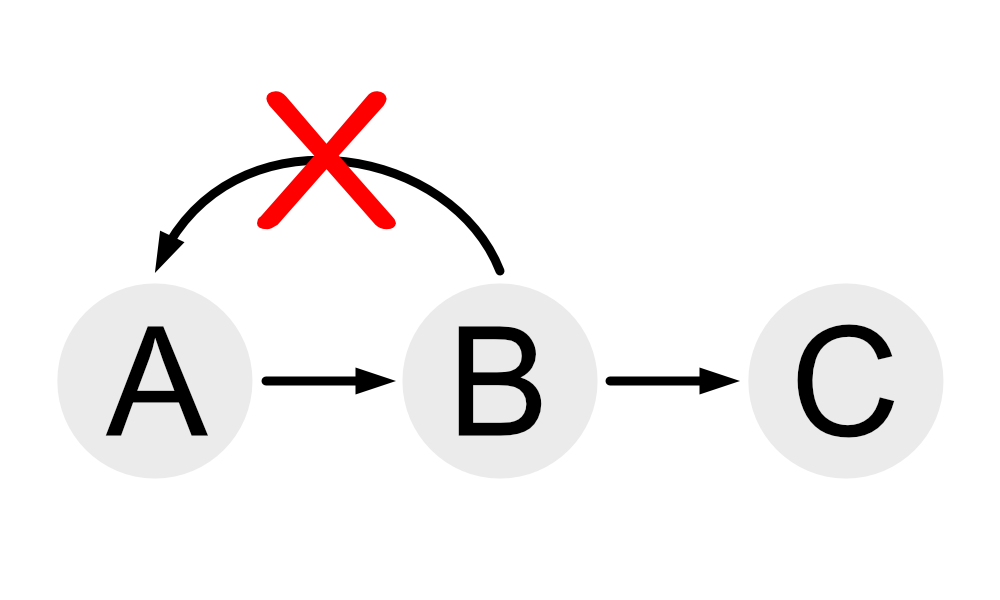
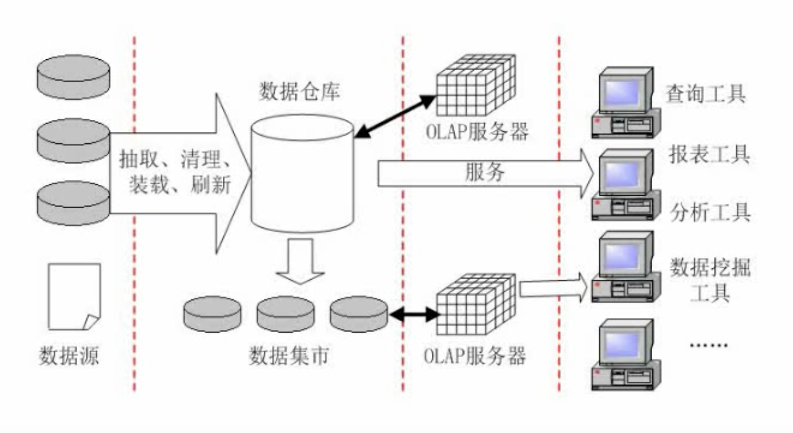

1.需求分析
2. 概念结构设计（主要做ER模型）
3. 逻辑结构设计（转换成关系模式)
4. 物理设计（加入DBMS特性）
各种表示：
集成方法：
一个实体转换为一个关系模式：
例：在数据库逻辑结构的设计中，将E-R模型转换成关系模型应遵循相关原则。对于三个不同的实体集和它们之间的多对多联系m:n:p，最少可转换成___个关系模型
解：由题可知，这是一个多对多的模型，因此需要(1+1+1)+1=4个关系模式
注意前面三个1是三个实体，最后一个1是联系需要转换的关系模式
关系代数的几种形式：并、交、差、笛卡尔积、投影、选择、联接 例如下述两个关系表S1和S2
| 关系S1 | 关系S2 | |||||
| Sno | Sname | Sdept | Sno | Sname | Sdept | |
| No0001 | Marry | IS | No0001 | Marry | IS | |
| No0003 | Candy | IS | No0008 | Katter | IS | |
| No0004 | Jam | IS | No0021 | Tom | IS | |
并集
那么S1∪S2（S1并S2）：合并相同项，并组合两个表
| S1∪S2 | ||
| Sno | Sname | Sdept |
| No0001 | Marry | IS |
| No0003 | Candy | IS |
| No0004 | Jam | IS |
| No0008 | Katter | IS |
| No0021 | Tom | IS |
交集
S1∩S2（S1交S2）：只显示两个表中相同部分
| S1∩S2 | ||
| Sno | Sname | Sdept |
| No0001 | Marry | IS |
差集
S1-S2（S1与S2的差集）：S1有，但是S2没有的（被减数有但是减数没有的）
| S1-S2 | ||
| Sno | Sname | Sdept |
| No0003 | Candy | IS |
| No0004 | Jam | IS |
笛卡尔积
每一个S1对应S2，因此如果是3x3的S1和3x3的S2做笛卡尔积的运算，那么结果为9x9的表，即表A每一条数据分别对应表B的每一条数据
| S1 x S2（笛卡尔积） | |||||
| Sno | Sname | Sdept | Sno | Sname | Sdept |
| No0001 | Marry | IS | No0001 | Marry | IS |
| No0001 | Marry | IS | No0008 | Katter | IS |
| No0001 | Marry | IS | No0021 | Tom | IS |
| No0003 | Candy | IS | No0001 | Marry | IS |
| No0003 | Candy | IS | No0008 | Katter | IS |
| No0003 | Candy | IS | No0021 | Tom | IS |
| No0004 | Jam | IS | No0001 | Marry | IS |
| No0004 | Jam | IS | No0008 | Katter | IS |
| No0004 | Jam | IS | No0021 | Tom | IS |
投影
投影需要选择对什么进行投影
类似于筛选操作，需要投影的内容进行现实，不需要投影的内容则不予显示（投影的内容是筛选列）
下表以对Sno和Sname做投影
| 对S1中的Sno和Sname进行的投影 | |
| Sno | Sname |
| No0001 | Marry |
| No0003 | Candy |
| No0004 | Jam |
p.s.上表记作π1,2(S1)
选择
选择相当于对行进行筛选，不需要的记录则不予显示
下表对S1中Sno=No0003的内容进行选择
| 对S1中Sno=No0003的内容进行选择 | |||||
| Sno | Sname | Sdept | |||
| No0003 | Candy | IS | |||
| 关系S1 | 关系S1 | ||||
| Sno | Sname | Sdept | Sno | Age | |
| No0001 | Marry | IS | No0001 | 23 | |
| No0003 | Candy | IS | No0008 | 21 | |
| No0004 | Jam | IS | No0021 | 22 | |
| 将S1与S2连接 | |||
| Sno | Sname | Sdept | Age |
| No0001 | Marry | IS | 23 |
p.s.上表记作S1▷◁S2(S1·Sno=S2·Sno)
部分函数依赖

其中A能直接确定C，因此A和B联合即可以确定C
即组件的一个部分就可以确定属性
传递函数依赖

其中A可以确定B，B可以确定C，因此A可以确定C
即确定的关系可以传递
但是不能反向确定（如果可以反向，那么两者便可以等价）
备注：例如(学号)和(学号,姓名)可以都可以称之为超键，但是(学号,姓名)只能作为超键，不能当作是候选键，因为有姓名这样的冗余属性
超键->（去除冗余信息）候选键->（选择一个）主键
求候选键
解法：
1. 画图关系图，A->B，A可以确定B
2. 找出入度为0的结点
3. 如果通过这个结点可以遍历整个图，那么这个结点就是候选键
例1：给定关系R（A1，A2，A3，A4）上的函数依赖集P={A1->A2，A3->A2，A3->A2，A2->A3，A2->A4}，R的候选关键字为___
解：候选关键字为A1
例2：关系模型P如图依赖关系，求候选键？
解：左下角小图可得候选键为C
图中央的大图候选键为A、B、D
例3：关系模型P如图依赖关系，求候选键？
解：候选关键字为A和B
范式：级别最低的是第一范式(1NF)，其次是第二范式(2NF)、第三范式(3NF)……最高级是BCNF
其中需要达到第二范式必须达到第一范式，以此类推
即如果达到级别高的范式，必须要先达到级别低的范式
其中第一范式属性值都是不可分的原子值
级别越高，规范程度越高，更有可能解决插入异常、删除异常、数据冗余的问题
第一范式（1NF）
在关系模式R中，当且仅当所有域只包含原子值，即每个分量都是不可再分的数据项，则称R是第一范式
例如下述表:
| 系名称 | 高级职称人数 | |
| 教授 | 副教授 | |
| 计算机系 | 6 | 10 |
| 电子系 | 3 | 5 |
上表不满足1NF，因为高级职称人数还可以继续拆分：
| 系名称 | 教授 | 副教授 |
|---|---|---|
| 计算机系 | 6 | 10 |
| 电子系 | 3 | 5 |
第二范式（2NF）
第二范式的前提必须要是第一范式，并且每一个非主属性完全依赖主键（不存在部分依赖）时，则称R是第二范式（2NF）
例如下述表中（红色加粗字体为候选键）
Sno |
Cno |
Grade | Credit |
|---|---|---|---|
| S01 | C01 | 75 | 4 |
| S02 | C01 | 92 | 4 |
| S03 | C01 | 87 | 4 |
| S04 | C01 | 55 | 4 |
| S01 | C02 | 87 | 2 |
| S02 | C02 | 95 | 2 |
| S01 | C03 | 94 | 5 |
| …… | …… | …… | …… |
(上表属于1NF)
(上表存在数据冗余)
上述表中Sno和Cno为候选键，但是Credit只依赖于Cno而不依赖于Sno，则上表不是第二范式，正确做法应该将其拆分
上述表需要将Cno和Credit提取出来建立新的关系表，原表中去除Credit这一列
主键只有一个的时候一定是第二范式
第三范式（3NF）
第三范式的前提必须是第二范式（2NF），且没有非主属性传递依赖于码时，则称其为第三范式
Sno |
Sname | Dno | Dname | Loca |
|---|---|---|---|---|
| S01 | 张三 | D01 | CS | 1 |
| S02 | 李四 | D01 | CS | 1 |
| S03 | 王五 | D01 | CS | 1 |
| S04 | 赵六 | D02 | IS | 2 |
(上述表为2NF)
(上表存在数据冗余)
上述表中Sno是主键，因此这个表肯定属于第二范式(2NF)，但是存在大量的重复信息，因此需要将Dno、Dname和Loca提取出来单独列表。
BC范式（BCNF）
BC范式的前提是第三范式，每个非主属性既不部分依赖于码也不传递依赖于码
例：某公司的部门（部门号，部门名，负责人，电话）、商品（商品号，商品名称，单价，库存量）和职工（职工号，姓名，住址）三个实体之间的关系如表1、表2和表3所示，假设每个部门有一位负责人和一部电话，但有若干名员工；每种商品只能由一个部门负责销售。部门关系不属于第三方范式的原因是___。如果用户要求得到表4所示的结构，需要___，并增加关系模式___。
第二空选项：
A.修改表1，增加职工号
B.修改表2，增加职工号
C.修改表2，增加部门号
D.修改表3，增加部门号
第三空选项：
A.销售（职工号，商品号，日期，数量）
B.销售（职工号，商品名称，商品号，数量）
C.销售（职工号，部门号，日期，数量）
D.销售（职工号，部门号，商品号，日期）
表1:
| 部门号 | 部门名 | 负责人 | 电话 |
|---|---|---|---|
| 001 | 家电部 | E002 | 1001 |
| 002 | 百货部 | E026 | 1002 |
| 003 | 食品部 | E030 | 1003 |
表2:
| 商品号 | 商品名称 | 单价 | 库存量 |
|---|---|---|---|
| 30023 | 微机 | 4800 | 26 |
| 30034 | 打印机 | 1650 | 7 |
| 30101 | 毛巾 | 10 | 106 |
| 30102 | 牙刷 | 10 | 106 |
表3:
| 职工号 | 姓名 | 住址 |
|---|---|---|
| E001 | 王军 | 南京路 |
| E002 | 李晓斌 | 淮海路 |
| E021 | 余飞 | 江西路 |
| E026 | 田晓菲 | 江西路 |
| …… | …… | …… |
表4:
| 职工号 | 姓名 | 部门号 | 月销售额 |
|---|---|---|---|
| E001 | 王军 | 家电部 | 528900 |
| E002 | 李晓斌 | 家电部 | 360000 |
| E021 | 余飞 | 百货部 | 12500 |
| E026 | 田晓菲 | 食品部 | 15000 |
解：1.只消除了非主属性部分函数依赖而没有消除传递函数依赖，而没有消除传递函数依赖
备注：在表1中，部门号只对应一个部门名称，但是部门号可以对应部门名的同时，部门名有对应负责人，负责人又对应电话（传递依赖）
2.选择C:修改表2，增加部门号
备注：从修改复杂程度来说选择修改表2
3.选择A:销售（职工号，商品号，日期，数量）
B选项中商品名称和商品号互相依赖
C职工号和部门号互相依赖
D同上
两种函数分解：保持函数依赖分解和无损分解
保持函数分解
在分解的同时也能表现出原有各个模式中的依赖关系
例如A->B->C关系的R(A,B,C)分解为R1(A,B)，R2(B,C)，那么可以说R1，R2是保留函数依赖分解
但是如果R拆分为R1(A,B)和R3(A,C)，其中B->C的关系未说明，那么这种拆分不是保持函数分解
无损分解
无损表示可以还原的分解方法
例：有关系模式：成绩（学号，姓名，课程号，课程名，分数）
函数依赖：学号->姓名，课程号->课程名，（学号，课程号）->分数
若将其分解为：
成绩（学号，课程号，分数）
学生（学号，姓名）
课程（课程号，课程名）
这种方式是否是无损分解？
方法一（还原法）：
解：这是一种无损分解
因为通过学生（学号，姓名）可以与成绩（学号，可称号，分数）做连接
通过课程（课程号，课程名）可以与成绩（学号，课程号，分数）做连接
方法二（画表法）：
| 学号 | 姓名 | 课程号 | 课程名 | 分数 | |
|---|---|---|---|---|---|
| 成绩 | a1 |
b12 | a3 |
b14 | a5 |
| 学生 | a1 |
a2 |
b23 | b23 | b25 |
| 课程 | b31 | b32 | a3 |
a4 |
b35 |
其中横排的是原表，包含学号、姓名、课程号、课程名和分数
左栏是拆分的表名称：成绩、学生和课程
用an表示拆分表中有该参数，n表示第n列，那么成绩行，学号列是a1，其余用bmn（表示第m行，第n列）表示
如果某一行中a1，a2有关系，另一行只有a1，那么这一行a1和a2皆为已知，例如上表可以修改为：
| 学号 | 姓名 | 课程号 | 课程名 | 分数 | |
|---|---|---|---|---|---|
| 成绩 | a1 |
a2 |
a3 |
b14 | a5 |
| 学生 | a1 |
a2 |
b23 | b23 | b25 |
| 课程 | b31 | b32 | a3 |
a4 |
b35 |
注意上述第2行第2列值修改为已知值
以此类推，这个表可以逐步修改为：
| 学号 | 姓名 | 课程号 | 课程名 | 分数 | |
|---|---|---|---|---|---|
| 成绩 | a1 |
a2 |
a3 |
b4 |
a5 |
| 学生 | a1 |
a2 |
b23 | b23 | b25 |
| 课程 | b31 | b32 | a3 |
a4 |
b35 |
其中有一行全都变成a，因此可以证明本次分解为无损分解
方法三（公式法）：
此方法仅限于一分二
例如R分解为R1和R2，那么那么求解出：
R1∩R2=A
R1-R2=B
R2-R1=C
如果A->B或者A->C有一个成立那么就是无损分解
注意下题另为一题：
设R=ABC，F{A->B}，ρ1={R1(AB),R2(AC)}和ρ2={R1(AB),R3(BC)}是否是无损分解？
解：1.
R1∩R2=A
R1-R2=B
R2-R1=C
A->B为题意，那么这是一个无损分解
2.
R1∩R2=B
R1-R2=A
R2-R1=C
B->A和B->C都没有出现
则这不是无损分解
例子：
1.丢失更新：
T1 T2
①读取A=10
② 读A=10
③A=A-5写回
④ A=A-8写回
上述会导致A-8覆盖掉A-5，导致结果A=2
2.不可重复读
T1 T2
①读A=20
读B-30
求和=50
② 读A=20
A=A+50
A=70
③演算出错
3.读“脏”数据
T1 T2
①读A=20
A=A+50
写回70
② 读A=70
③ROLLBACK
A恢复为20
A+50只是一个临时值
可以防止丢失修改读完后可释放S锁，可以防止丢失修改，还可以防止读“脏”数据直到事务结束才释放，可防止丢失修改、防止防止丢失修改，还可以防止读“脏”数据利用主键对输入内容的约束
利用外键对输入内容的参照
对输入的内容值的规定范围
数据库完整性约束用于提高数据库中数据的可靠性和完整性
对于一些复杂的情况，需要利用触发器通过脚本的形式对数据库进行约束
| 措施 | 说明 |
| 用户标识和鉴定 | 最外层的安全保护措施，可以使用用户账户、口令及随机数检验等方式 |
| 存取控制 | 对用户进行授权，包括操作类型（如查找、插入、删除、修改等动作）和数据对象（主要是数据范围）的权限 |
| 密码存储和传输 | 对远程终端信息用密码传输 |
| 视图的保护 | 对视图进行授权 |
| 审计 | 使用一个专用文件或数据库，自动将用户对数据库的所有操作记录下来 |
| 备份方式 | 优点 | 缺点 |
| 冷备份 | 非常快速的备份方法（需要备份文件），容易归档（简单复制即可），容易恢复到某个时间点上（只需要复制回去），能与归档方法结合，做数据库“最佳状态”的恢复；低度维护，高度安全 | 单独使用时，只能提供到某一时间点上的恢复；在实施备份的全过程中，数据库必须要做备份而不能做其他工作；若磁盘空间有限只能复制到磁盘等外部设备上，速度缓慢，不能按表或者用户恢复 |
| 热备份 | 可在表空间或数据库文件级备份，备份的时间段；备份时数据库仍可以使用，可达到秒级恢复（恢复到某一时间点上）；可对几乎所有的数据库实体做恢复；恢复速度快速 | 不能出错，否则后果很严重，若热备份不成功所得到的结果不可用于时间点的恢复；困难于维护，所以要特别小心，不允许失败 |
完全备份之后变化的数据备份之后变化的数据海量一般表示全部存储，增量一般表示针对上一次的备份后备份变化的数据
静态一般表示在系统中无运行事务时进行，动态一般表示每次只转储上次转储后更新的数据
海量转储：在系统中无运行事务时进行，每次转储全部数据库增量转储：在系统中无运行事务时进行，每次只转储上次转储后更新的数据海量转储：转储期间允许对数据库进行存取或修改，每次转储全部数据库增量转储：转储期间允许对数据库进行存取或修改，每次只转储上次转储后更新的数据日志文件是针对数据库改变所做的记录，它可以记录针对数据库的任何擦欧总，并将记录结果保存在独立的文件中
| 故障关系 | 故障原因 | 解决方法 |
|---|---|---|
| 事务本身的可预期故障 | 本身逻辑 | 在程序中预先设置Rollback语句 |
| 事务本身不可预期故障 | 算数溢出、违反存储保护 | 由于DBMS恢复通过日志，撤销事务对数据库的修改，回到事务最初状态 |
| 系统故障 | 系统停止运转 | 通常使用检查点法 |
| 介质故障 | 外存被破坏 | 一般使用日志重做业务 |
数据仓库特点:
1.面向主题
2.数据仓库存储集成数据
3.数据仓库一般不做修改，具有相对稳定性
4.反应时间的变化
数据仓库的建立

备注：
清理：对数据进行格式化
OLAP：联机分析处理器，用于分析处理
规范化会使得表不断拆分，导致拆分的表过多，减少数据冗余但是会增加查询的工作量
用4V表示大数据的特点：
1.Volume（数据量大）
2.Velocity（速度快）
3.Variety（多样性丰富）
4.Value（价值大）
大数据的重要特征
1.高度可扩展性
2.高性能
3.高度容错
4.支持异构环境
5.较短的分析延迟
6.易用且开放的接口
7.较低成本
8.向下兼容性